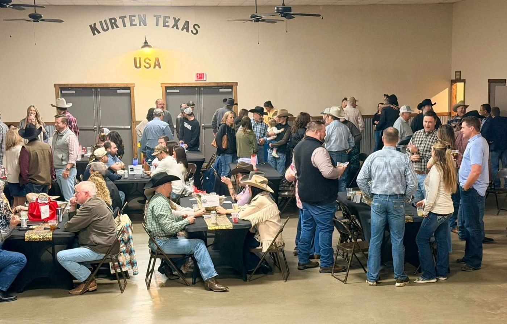

Trooper Chad Walker's family
After DPS Trooper Chad Walker was killed in the line of duty in 2021, BCFRA presented his family with a $1,000 check through Precinct 1 Constable Jeff Reeves.
25 News, April 2021Founded in memory of Constable Brian Bachmann. Run by the first responders of Brazos County.
In 2012, Constable Brian Bachmann was killed in the line of duty. His fellow first responders saw what his family faced. In 2014, they founded this association so the next family wouldn't stand alone.
Our board is drawn from Brazos County law enforcement agencies and the Bryan and College Station Fire Departments.

A few of the first responders and families the association has stood behind, as reported by local news.
After DPS Trooper Chad Walker was killed in the line of duty in 2021, BCFRA presented his family with a $1,000 check through Precinct 1 Constable Jeff Reeves.
25 News, April 2021When an icy crash on Highway 21 during Winter Storm Uri left him injured, BCFRA helped cover expenses, including hotel stays.
25 News, April 2021Two graduating seniors, the children of a College Station Fire battalion chief and a College Station Police lieutenant, each received a $1,500 scholarship toward college and trade school.
BCFRA on Facebook